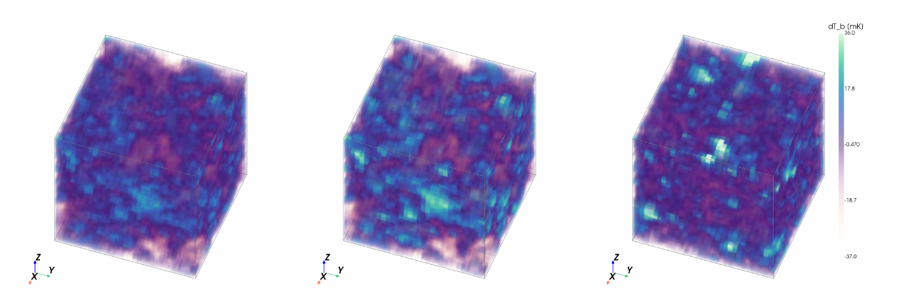

Reading the first galaxies straight from the 21 cm map
A simulation-based inference pipeline that compresses noisy, SKA-like 3D maps of the early Universe into four numbers, and asks whether a neural compressor trained to preserve information can beat the summary statistics astrophysicists design by hand.
Data LORELI II, 9,828 LICORICE simulations, SKA 100 h noise Methods 3D CNN, VMIM, neural spline flows, MCMC, simulation-based calibration

The question
The Square Kilometre Array will map the faint radio glow of neutral hydrogen during the Epoch of Reionisation. Each simulated observation holds 98,304 values, yet the physics behind it is set by four astrophysical parameters. There is no formula for the likelihood, and the simulator is far too expensive to call inside a sampler, so inference must be learned from a fixed database of simulations. That only works if each map is first compressed to a handful of numbers without losing what matters.
This project compares two ways of doing that compression, with everything downstream held identical: a learned network on the hand-crafted summaries (power spectrum and pixel-distribution moments), and a 3D convolutional network on the raw noisy cubes, both trained by variational mutual information maximisation.
What we found
Raw cubes carry far more information than the summaries
A CNN compressor on raw cubes shrinks the generalised posterior variance by a factor of about 50 relative to the direct inference of Semelin et al. (2025), and by about 150 relative to the same learned compressor on hand-crafted summaries, at equal or better calibration.
VMIM wins on honesty, not only on width
Against an MSE-trained compressor with the same backbone, VMIM gives a tighter joint posterior and flatter rank histograms on fX, τ and rH/S, where the MSE arm is mildly overconfident.
The weak parameter arrives late
The hard-to-soft X-ray ratio rH/S leaves almost no trace in one-point or two-point statistics. Under VMIM it stays unencoded for about 55 epochs and then appears abruptly, which is why a per-parameter recovery probe, a width floor and a faster head matter during training.
Read about the problem and the data, or go straight to the results.